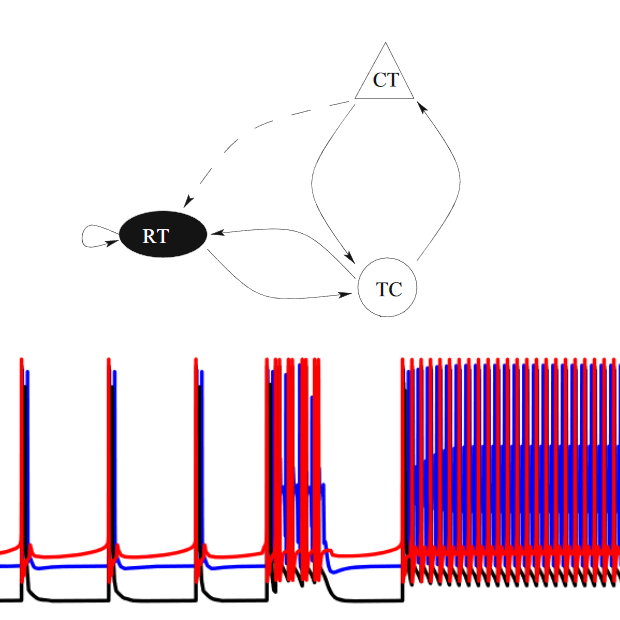

|  |
Childhood absence epilepsy (CAE) is a type of epilepsy that causes patients to have sudden and frequent absence seizures ("blank out"). It usually manifests in young children between 4-6 years old, who eventually grow out of it in their later years.
We would like to understand the mechanisms behind the seizures, and why CAE only affect young children. This important for predicting when will seizures occur, and also for developing ways that can prevent the seizures from happening.
To do so, we consider a simple system consisting of three types of neurons (RT, TC, and CT as shown on the top diagram on the left), and represent their dynamics with a conductance-based model (Hodgkin-Huxley). It has been known that CAE patients have weaker connections between these neurons compared to healthy people, however that fact alone does not explain CAE, since the connections does not get stronger as the patients get older and grow out of CAE.
We believe a key mechanism is conductance delay. The CT and TC neurons are located far apart in the brain, thus it takes some time for a signal to travel from one neuron to another. This time delay is longer in young children compared to adults, since their nervous systems (especially myelin sheath) are not fully mature. To account for this fact, we add delay terms to our model.
We were able to show that, a long conductance delay, in conjunction with weaker connections, results in a bistable system consisting of two stable states. In the lower diagram on the left, we show that in this case, it is possible to switch between these two states as the result of small perturbations.
However, with either a short conductance delay, or stronger inter-neuron connection, one of the two state is destabilized. We therefore believe the remaining stable state represents normal brain functioning, and the destabilized state represent seizure. This can explain why seizures occur in CAE patients, and why they can grow out of it as their myelin sheath matures due to age.
Related publications:
[1]
|